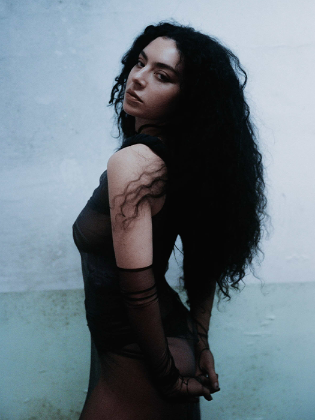
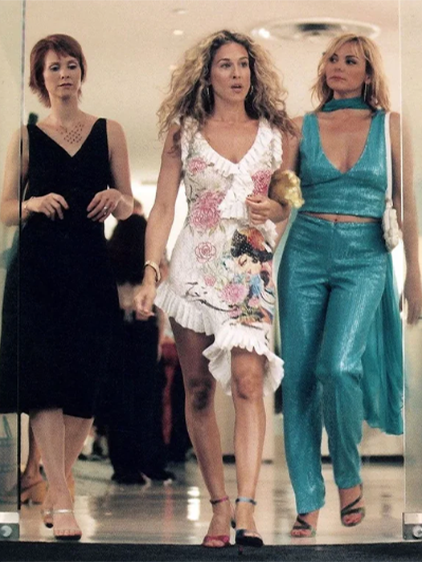

Who Inspires Me?
A list of inspiring artists by Grace Davidson

Kel Lauren
Kel Lauren is a graphic designer who works in merchandising for musical artists. They are super talented and I’ve been following their work for a few years now. Kel’s style is unique and eclectic, the FAQ on their website describes some of their work as “gas station chic.” I’m incredibly inspired by their body of work, it’s experimental and bold yet very intricate and intentional. Not only does their eye for design inspire me, but I’m inspired to enter their specific field of graphic design. I’d love to combine my love for design with my love for music (and movies/TV).

Charli XCX
Charli XCX is a musician whose new album, BRAT, has been the soundtrack of my summer. I love the energy she creates with her music, the beats make me want to dance all night but she’s also able to thoughtfully communicate a relatable perspective through her lyrics. Charli XCX’s music inspires me by making me feel confident and carefree. I’m also inspired by her visual branding from a graphic design standpoint, currently it’s very minimal and focuses more on edgy images.

Patricia Field
One of my favorite go-to shows is Sex and the City and the fashion throughout the show inspires me no matter how many times I watch it. Patricia Field was the costume designer for the show and is responsible for so many iconic looks that I often flip through in my head when I’m putting an outfit together (although my outfit rarely lives up to the inspiration in my head). The different aesthetics that Field created resonate with me and inspire me not just in my own fashion attempts but in my visual art as well.